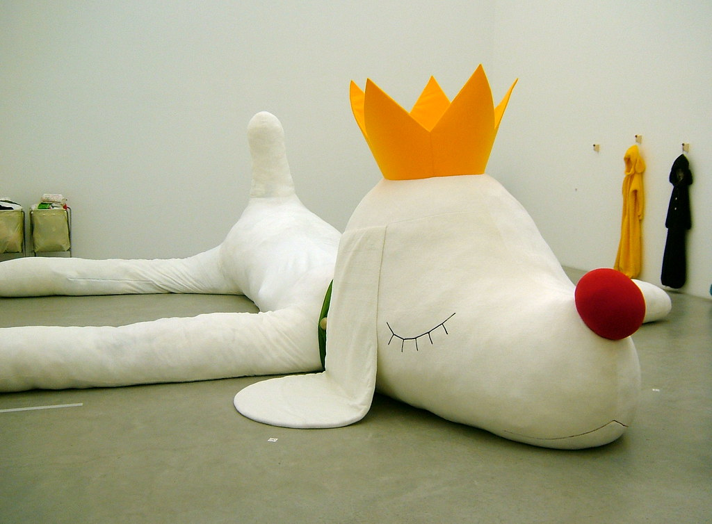
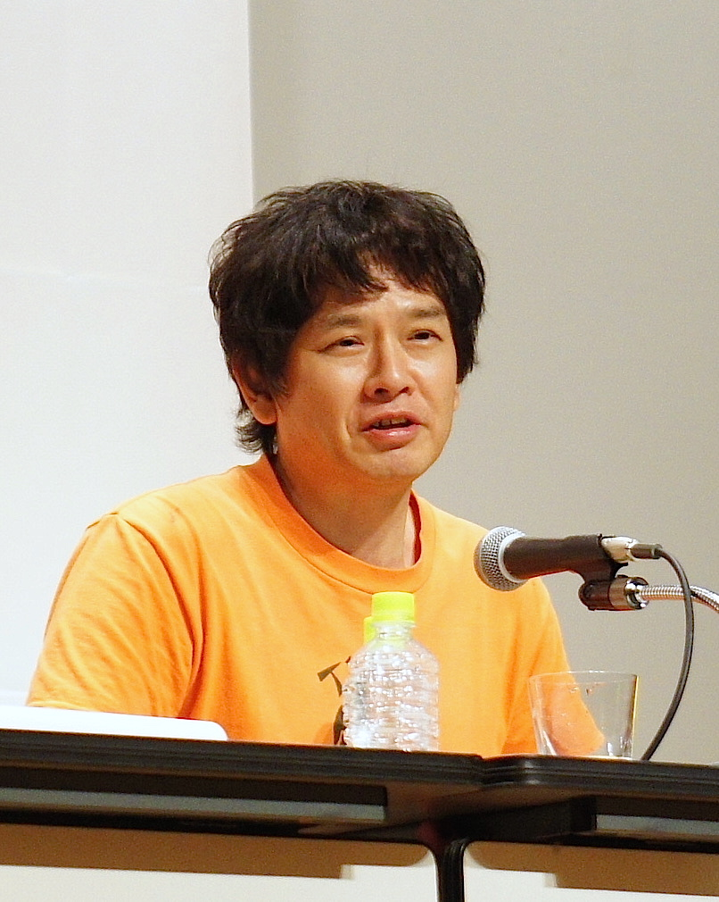
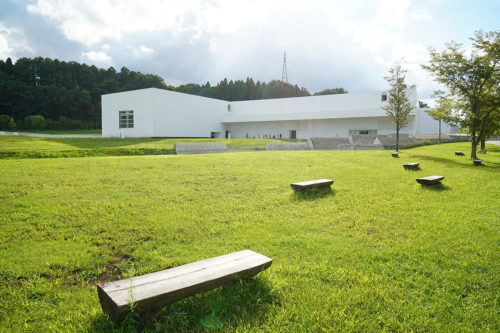

Lesson 05 / 17 min / Art
The Girl with the Knife
Yoshitomo Nara (b. 1959) · 奈良美智

The three-minute version
Yoshitomo Nara was born in Hirosaki, in Aomori Prefecture, on 5 December 1959. His parents worked; he was often alone. He has said that animals and music were easier to talk to than people, and that he grew up listening to American forces radio and looking at album covers because there was no museum nearby. That combination — loneliness, animals, American pop, and a northern Japanese landscape — is the whole work in embryo.
He studied at Aichi Prefectural University of Fine Arts and Music (BFA 1985, MFA 1987), then moved to Germany: the Kunstakademie Düsseldorf from 1988 to 1993, and Cologne until 2000. The isolation of those years was formative. He developed the big-headed, wide-eyed children who look directly at the viewer, often with a small weapon, a cigarette, or a bandage. In 2000 he returned to Japan for Don’t Mind, If You Forget Me at the Yokohama Museum of Art; in 2010 Asia Society gave him his first major New York show, Nobody’s Fool.
After the 2011 earthquake and tsunami, his work turned softer and more inward — paler colours, more diffuse backgrounds, a different kind of silence. In 2019 Knife Behind Back (2000) sold for HK$195.7 million (about US$24.9 million), the highest price for a Japanese artist at auction. In 2026 he remains one of the most widely recognised living Japanese artists, with shows in New York and Aomori.
Biography and quotes: Christie’s guide; Yoshitomo Nara Foundation; Aomori Museum of Art.
Cute is not innocent
The first thing to notice is the size of the head and the directness of the gaze. The children are drawn with the proportions of a mascot: huge head, small body, eyes that meet yours. That is a machine for cuteness. The second thing to notice is what the child is holding. A knife. A cigarette. A bandage. The cuteness is not cancelled; it is made uncomfortable.
Nara has resisted the reading that the children are aggressive. “Look at them, the weapons are so small, like toys,” he told Christie’s. “Do you think they could fight with those? I don’t think so. Rather, I kind of see the children among other, bigger, bad people all around them, who are holding bigger knives.” The child is not the threat; the child is the one who has noticed the threat.
“I kind of see the children among other, bigger, bad people all around them, who are holding bigger knives.” Yoshitomo Nara, quoted by Christie’s
This is why the work travels so well. It can be read as a children’s illustration, a punk flyer, a market darling, or a portrait of vulnerability. All four readings are available at once. The best Nara works keep the ambiguity open; the weaker ones let the cute win.


Three works to know
1. Knife Behind Back (2000)
A girl in a red dress, one arm hidden behind her back. The knife is implied before it is seen. The painting is large — about 6 × 7 feet — and the scale turns the child into a monument. In 2019 it became the most expensive Japanese artwork at auction. The price is not the point, but it is evidence that the image has become part of global visual culture.
2. Aomori-ken (Aomori Dog) (2005)
An 8.5-metre reinforced-concrete dog, permanently installed outdoors at the Aomori Museum of Art. The dog appears to be emerging from a trench in the ground; its eyes are closed, its expression calm. It is the largest and most public of Nara’s works, and the one that turned him into a civic monument in the prefecture where he grew up.
3. Nobody’s Fool (2010)
The Asia Society exhibition in New York, curated by Melissa Chiu and Miwako Tezuka, introduced the full range: paintings, drawings, sculptures, and the My Drawing Room installation. It marked the moment the New York art world treated Nara as a major postwar artist rather than a Japanese pop phenomenon.

The market, briefly
Nara’s market is unusual for a living artist: a catalogue raisonné, deep institutional demand, and a global collector base. The 2019 record made headlines, but the more interesting fact is the breadth — paintings, drawings, sculptures, editions, and collaborations all have liquid markets. That breadth is also a risk: it can make the work look like a brand. The best defence is to look at the early drawings and the late paintings, where the line is doing the work and the merchandise is nowhere in sight.
Watch
Where to see Nara in person
- Aomori Museum of Art — the Aomori Dog outdoors; the collection holds more than 170 Nara works, though not all are always on display. Check the calendar.
- Hirosaki — the AtoZ Memorial Dog and the Hirosaki Museum of Contemporary Art; the 2026 Nara dates were advertised as 5 June – 15 November.
- Mori Art Museum, Tokyo — a regular stop for Nara and Murakami; check the current show.
- M+, Hong Kong — strong Nara holdings; pair with Kusama and Murakami.
- David Zwirner, New York — new paintings and sculptures, 5 November – 12 December 2026.
The Aomori Dog is outdoors and free; the museum is the reason to take the train. In winter, check snow conditions and the dog’s access corridor.
Check yourself
0 of 0 correct so far1. What animal is Nara’s 8.5 m Aomori sculpture?
2. Which painting set the Japanese auction record in 2019?
3. Where did Nara live from 1988 to 2000?
Primary source
Read the Christie’s guide for the biography and the artist’s own words, then browse the catalogue raisonné. If you can find the Nobody’s Fool catalogue (Asia Society, 2010), it is the best single book on the work.
One thing to remember: the big eyes are not a brand; they are a mirror.